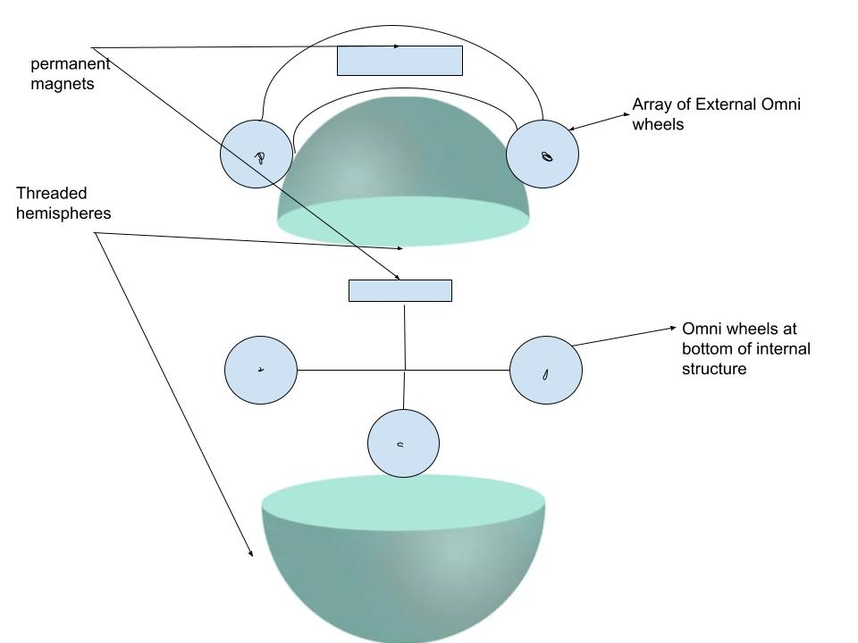

This is the end of our first semester! In the past two weeks, the team has continued making changes to our alpha prototype design to increase manufacturability and added geometry to the yoke design in order to mount the actuators to the ball drive. The team has determined that the ball drive will be actuated by two motors which are connected to the omni-chains by belts and pulleys. We plan to continue working on our alpha prototype as parts are obtained. See you next semester!
In the past two weeks, the team has continued refining the design for our alpha prototype. The omni-chains have been moved to a slightly different orientation on the yoke in order to simplify the control system later on. The spherical wheel has been made slightly thinner. This will allow us to use shorter screws in the spherical wheel, which will reduce the weight and cost of the wheel. The team has been reconsidering actuators to provide adequate speed and torque to the spherical wheel, but we have also begun ordering and manufacturing some of the parts for our alpha prototype.
Since the last update, the team has conducted large portions of our planned technical analysis. We've refined our spherical wheel design to be two 1-inch thick hemispheres that screw together. We plan to use nuts and bolts instead of iron rods for easier assembly. The team also determined that magnets on the omni-chains alone will not be sufficient to maintain coupling between the wheel and yoke, so we will be adding additional magnets to the inside of the yoke. Finally, there were concerns about the spherical wheel moving side to side within the yoke, so we have changed the design to use two omni-chains instead of one to center the wheel.
In the past two weeks, the team has begun elaborating on our design and performing a technical analysis. A major change has been changing the single large rod in the spherical wheel to several smaller rods spaced evenly about the surface of the ball.
The team has determined a number of calculations will need to be performed to ensure our design meets our own metrics. The first set is a kinematic analysis to ensure the ball drive will function correctly while navigating inclines and small obstacles. Secondly, a number of CAD studies will be conducted to determine the load carrying capacity of the ball drive and the weight of the ball drive itself. Third, research will be performed on magnetic Halbach arrays to determine how to arrange the magnets on our design for optimal magnetic coupling. Finally, a bill of materials will be assembled and a final cost of the ball drive will be determined.
At the start of our project, the team performed some background research into existing products and potential issues, in order to inform our design process. We found that while spherical ball drives have existed as early as the 1950's, the idea was largely ignored due to poor performance. Simultaneously, the team developed a set of product needs and corresponding metrics for our design to meet. These metrics defined the size of the ball drive, the load carrying capacity, ease of manufacturing, cost, and operational performance.
With this background material, the team began generating design concepts for the three subsystems of the ball drive: the drive system, the spherical wheel, and the internal structure. These subconcepts were then combined into several design concepts. Several design concepts were screened out based on our metrics, and we were left with three finalist concepts: the Twist & Lock, the Bottom Omni-Wheel, and the Induced Omni-Wheel. Finally, the finalist designs were more precisely scored against our metrics, and the Induced Omni-Wheel design was selected.
